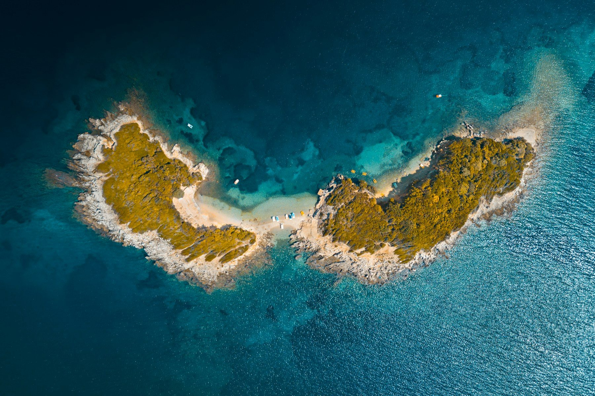
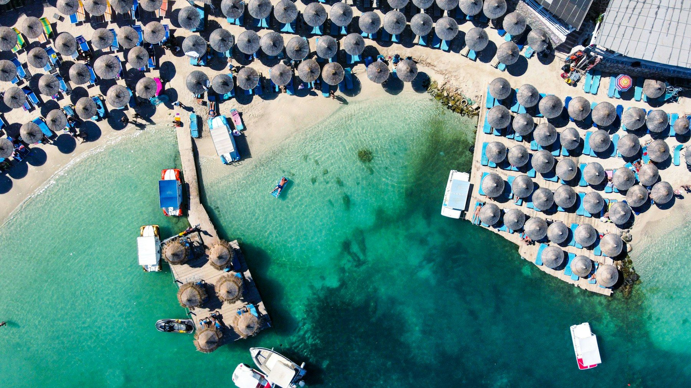
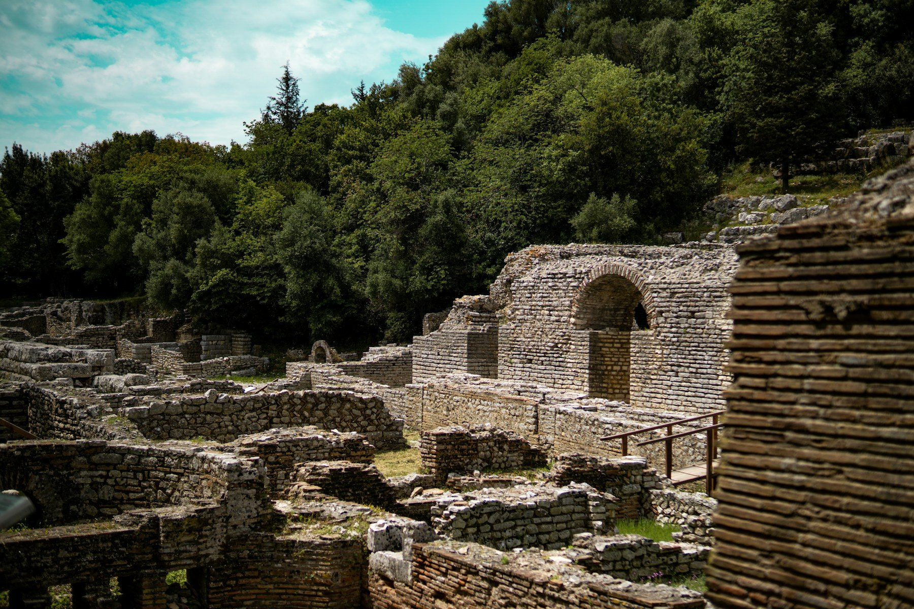
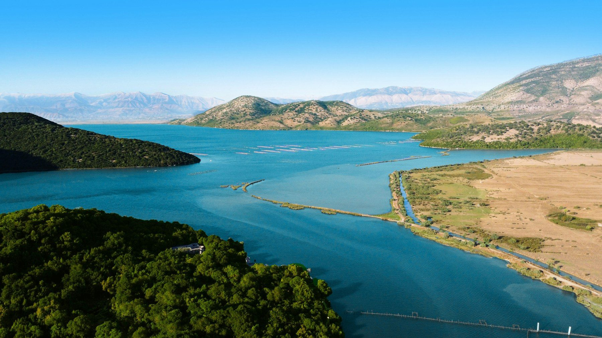
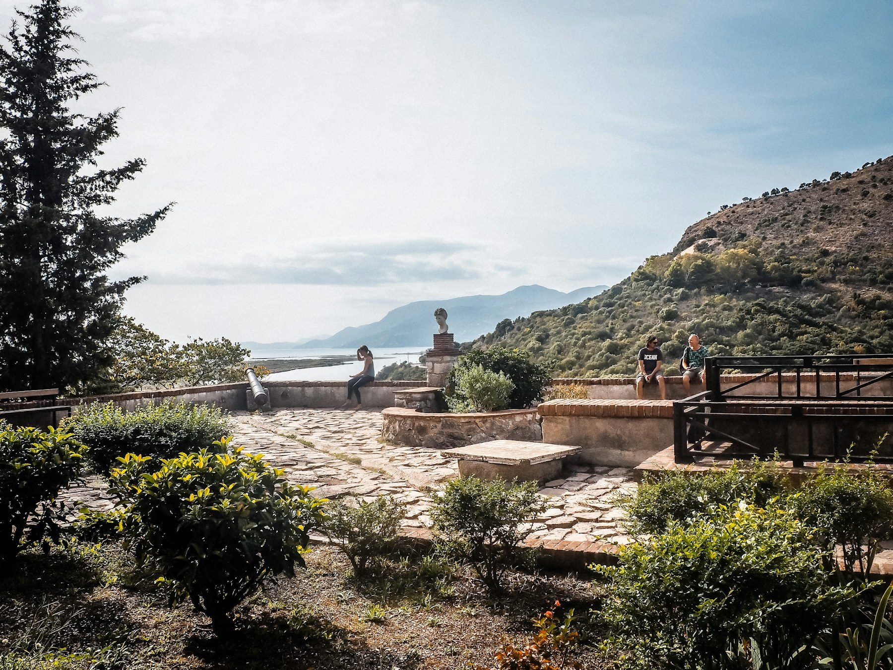

Sarandë, Ksamil & Butrint
No. 23 · Albania · from the Albania deck · 3 nights · the southern beach base
The deck's southern base and its unhurried middle: three nights split between Ksamil's island beaches, an afternoon in the UNESCO ruins at Butrint, and Sarandë's promenade for sunset drinks — the holiday part of the holiday.
The list
| No. | Thing | Notes |
|---|---|---|
| 1 | Ksamil beach day | The deck's Day 7: sunbeds, island views, and water that goes from turquoise to glass by late afternoon. |
| 2 | Out to the little islands | Pedalo or short boat ride across to the Ksamil islets for the far-side water — the photos that book the trip, in person. |
| 3 | Sunset drinks in Sarandë | The deck's optional evening: the promenade takes the sunset over the bay, and Corfu sits across the water. |
| 4 | Butrint National Park | The deck's Day 8 morning: the UNESCO-listed city — Greek, Roman, Byzantine, Venetian — walked slowly, shade permitting. |
| 5 | The swim after Butrint | The deck's sequence, respected: ruins in the morning, back to a Ksamil beach for the afternoon. |





Eat & drink: seafood lunches between swims, byrek on the beach, and long dinners in Sarandë. Currency is the lek, cash preferred outside town. The deck's planning figures: R11,200–R18,580 per person for the whole 10 nights, excluding flights — working numbers to re-price, not quotes.Field note · Balkans 2027